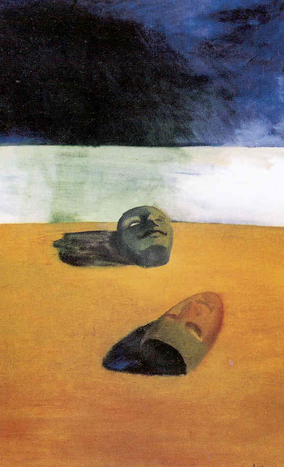

May 2003
Editorial Comments
Interventions
- Man-Made Laws and Feminine Feelings: A “Lesbian” Encounter with the Law in Sri LankaYasmin Tambiah
- Displaced Women: Rights and Resettlement in the North and East of Sri LankaSophia Elek
- Assessment of Needs in the Conflict Affected Areas of the North EastMuttukrishna Sarvananthan
- Who Wins the Neo-liberal Peace? Part 2Darini Rajasingham-Senanayake
- Gujarat RevisitedJean Drèze
- Trickle UpAnika